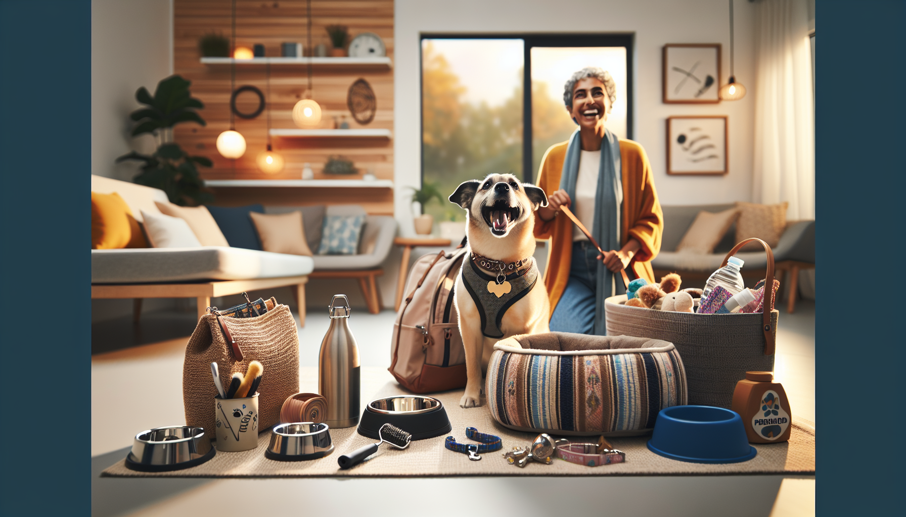

Bringing a dog into your life is one of the most rewarding experiences ever. Dogs fill our homes with joy, companionship, and plenty of personality. They also come with real daily needs, and having the right accessories can make life easier for both you and your pup. Whether you are a first-time dog parent, a seasoned pet lover, or a gift shopper looking for something practical and thoughtful, choosing the right dog accessories matters.
From walks and travel to mealtime and playtime, the best dog accessories help keep your pet safe, comfortable, healthy, and happy. They can also make your routines more organized and less stressful. In this guide, we are covering the top 10 accessories every dog owner needs, along with why each one deserves a spot in your home.
If you have ever wondered which dog essentials are truly worth buying, this list is for you.
Every dog needs a reliable collar. It is one of the most basic but most important accessories you can buy. A good collar helps with identification, training, and everyday handling. The best collars are sturdy enough for daily wear but comfortable enough that your dog barely notices them.
Look for a collar made from durable materials with secure hardware and an adjustable fit. Your dog should be able to wear it comfortably without rubbing or slipping off. Pairing the collar with a clear ID tag is essential. If your dog ever gets lost, an ID tag can help them return home quickly.
Many pet owners also love personalized collars or tags because they combine style with function. They make a practical gift too, especially for new dog owners.
A leash is another everyday essential that no dog owner should be without. Walks are not just bathroom breaks. They are opportunities for exercise, mental stimulation, training, and bonding. A dependable leash keeps your dog safe while giving you better control in different environments.
Standard leashes are great for regular walks, while hands-free or padded options can add comfort for longer outings. For most dogs, a leash that is durable, easy to grip, and the right length is the best choice. You want something that feels secure without being too heavy.
If you are shopping for a dog-loving friend, a quality leash is one of those useful gifts they will appreciate every single day.
Many dog owners now prefer harnesses over collars for walks, especially for dogs that pull, small breeds, or pups with sensitive necks. A well-fitted harness helps distribute pressure more evenly across the body, which can be safer and more comfortable.
Harnesses are especially helpful for training and for dogs who tend to get overly excited on walks. There are front-clip, back-clip, and no-pull styles available, so the right choice depends on your dog’s size, behavior, and activity level.
When selecting a harness, fit is everything. It should be snug enough to stay in place but not so tight that it causes discomfort. Once you find the right one, walks often become much more enjoyable for both dog and owner.
Dog bowls may seem simple, but they are a daily-use accessory that can make a big difference. Your dog eats and drinks from them every day, so quality matters. Stainless steel bowls are popular because they are durable, easy to clean, and resistant to odors. Ceramic bowls can also be a stylish option, while travel bowls are ideal for pet owners on the go.
The right bowl size depends on your dog’s breed and eating habits. Some dogs benefit from slow feeder bowls that encourage healthier eating by preventing them from gulping food too quickly. Non-slip bases are another helpful feature, especially if your dog tends to push bowls around the floor.
For gift shoppers, personalized feeding accessories add a thoughtful touch while still being practical.
Dogs need a comfortable place to rest, and a quality dog bed gives them a space that feels safe and relaxing. Whether your pup loves stretching out, curling up, or burrowing into blankets, the right bed supports better sleep and overall comfort.
Older dogs may benefit from orthopedic beds that provide extra joint support. Smaller dogs often love plush, nest-style beds, while larger breeds may prefer flat, spacious designs. Washable covers are a huge plus for keeping things clean and fresh.
A dog bed is not just about comfort. It can also help establish a routine and create a calm resting area in your home. For many pet owners, it quickly becomes one of the most-used accessories they own.
Regular grooming is part of responsible dog care, and the right accessories make it much easier. Even short-haired dogs benefit from brushing, nail maintenance, and occasional bathing. Grooming tools help reduce shedding, prevent matting, and keep your dog looking and feeling their best.
Basic grooming essentials often include:
Consistent grooming is also a great way to check for skin issues, lumps, or pests. If your dog is nervous about grooming, having gentle, high-quality tools can make the process feel less intimidating. This is one accessory category that supports both cleanliness and health.
Toys are not just fun extras. They are essential for enrichment, exercise, and preventing boredom. Dogs need outlets for chewing, chasing, problem-solving, and play. Without enough stimulation, many dogs become restless or destructive.
A balanced toy collection might include chew toys, plush toys, fetch toys, and puzzle toys. The best choices depend on your dog’s size, age, and play style. Tough chewers need durable materials, while puppies may benefit from softer teething options.
Interactive toys are especially helpful when you want to keep your dog engaged indoors. They challenge your dog mentally and can make solo time easier. For many pet owners, rotating toys helps keep things exciting without constantly buying new ones.
It may not be glamorous, but this is one accessory every dog owner absolutely needs. Waste bags and a convenient holder make walks cleaner, easier, and more responsible. Keeping a roll attached to your leash or bag means you are always prepared.
A good waste bag holder is lightweight, easy to refill, and secure enough that it does not bounce around too much during walks. Leak-resistant bags are always worth it. They are a small detail that makes a big difference.
For new dog owners especially, this simple accessory quickly becomes a daily must-have. It is practical, inexpensive, and something no pet parent should leave home without.
Dogs go places with us more than ever, from road trips and hikes to quick errands and weekend visits. That is why travel-friendly accessories are incredibly useful. A few well-chosen items can make outings smoother and safer.
Some of the best dog travel accessories include:
These accessories help you stay prepared wherever you go. They also reduce mess and keep your dog more comfortable in unfamiliar settings. If your dog loves joining your adventures, travel gear is definitely worth the investment.
Once you have covered the basics, personalized dog accessories are the perfect finishing touch. These items combine function with personality, making them especially popular with dog lovers and gift shoppers. Think custom bandanas, personalized tags, name bowls, or breed-themed items that celebrate the bond between pets and their people.
Personalized accessories can also make everyday essentials feel more special. They are thoughtful gifts for birthdays, gotcha days, holidays, or new puppy celebrations. For many dog owners, custom pet products are a fun way to show off their dog’s unique charm while still choosing something useful.
This is where style meets practicality, and it is easy to see why personalized pet accessories continue to grow in popularity.
Not every accessory is one-size-fits-all. When shopping, think about your dog’s breed, age, size, activity level, and personality. A senior dog may need orthopedic support, while a high-energy puppy may need more durable toys and training gear. Comfort, safety, and ease of use should always come first.
It also helps to focus on quality over quantity. A few well-made accessories that truly fit your dog’s needs are usually better than a pile of items you rarely use. If you are buying a gift, practical accessories with a personal touch are often the most appreciated.
The top 10 accessories every dog owner needs are not just about convenience. They support your dog’s health, comfort, safety, and happiness every single day. From collars and leashes to beds, toys, and personalized extras, the right accessories can turn everyday routines into smoother, more enjoyable experiences.
If you are building your dog essentials checklist or searching for a thoughtful gift for a dog lover, start with the items that combine usefulness, comfort, and style. Dogs give us so much love, and choosing products that make their lives better is one of the easiest ways to give some of that love right back.
Ready to find something special for your pup or a fellow dog lover? Shop personalized pet products at SnoutAndAbout on Etsy.